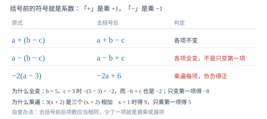

去括号法则
括号前是「+」等于乘 +1，是「−」等于乘 −1。前者各项不变、后者各项全变——法则不是背出来的，是分配律算出来的。
| 所属主题 | 整式的加减 |
|---|---|
| 所属模块 | 代数 |
| 课标学段 | 第四学段（7~9 年级） |
| 前置知识 | 同类项与合并同类项 |
| 核心素养 | 运算能力推理能力 |
教材定位
人民教育出版社《人教版（2024版）义务教育教科书·数学》
七年级上册第4章 整式的加减4.2 整式的加法与减法
对应七上 4.2 第 2 课时（去括号）。教材把法则的依据落在分配律上；本篇用两组具体数值反证「负号只变第一项」与「系数只乘第一项」，并把「符号单独做一遍」写成可执行的步骤。
说明
括号前是「+」号，把括号和它前面的「+」去掉，括号里各项都不变号：a+(b-c)=a+b-c。括号前是「-」号，把括号和它前面的「-」去掉，括号里各项都要变号：a-(b-c)=a-b+c。
道理在分配律。括号前的符号其实就是系数：a+(b-c)=a+1\cdot(b-c)=a+b-c；a-(b-c)=a+(-1)\cdot(b-c)=a-b+c。所谓「变号」，就是每一项都乘了 -1。口诀「去括号，看符号；是 + 号，不变号；是 - 号，全变号」只是把这两行算式说成了顺口溜。
括号前有数字因数时，这个数要乘遍括号内的每一项：-3(2a-b)=-6a+3b。做法上分两步最稳：先定每一项的符号（负负得正、正负得负），再算绝对值，两步分开写，符号就不容易漏。
使用场景
整式加减题几乎每题都带括号，去括号总是第一步。考试里最高频的失分也在这里：括号前是负号时只变第一项，或者数字因数只乘了第一项。这类错一出现，后面合并得再准也没用。
解一元一次方程同样要去括号，如 3(x-2)=2(x+1)。方程里还要额外顾及「两边同时」的操作，但括号内部的符号规则与这里完全一致；这一篇练熟，方程那一步就不会拖后腿。
注意点
括号前是「-」时，括号内每一项都要变号，不能只变第一项：-(2a-3b)=-2a+3b，写成 -2a-3b 就错了。
括号前有数字因数时，这个数要乘遍每一项，包括常数项：2(x-3)=2x-6，写成 2x-3 是漏乘常数项。
括号外同时有系数与负号时，两者一起作用：-2(a-3)=-2a+6。系数 -2 乘 -3 得 +6，这里负负得正，别惯性写成 -6。
证明

图 1：括号前的符号就是系数 +1 或 −1；有数字时，数字要乘遍每一项，包括常数项
证明
结论 1去括号法则是分配律算出来的结果，不是一条独立规定。
括号前有系数时，式子的意思是「这个系数乘括号里的整体」。a+(b-c) 里括号前的「+」等价于系数 +1，于是 a+1\cdot(b-c)，用分配律展开得 a+b-c。a-(b-c) 里「-」等价于系数 -1，于是 a+(-1)\cdot(b-c)，展开得 a+(-1)b+(-1)(-c)=a-b+c。两种情形合起来，正好是教材给的口诀，一字不差。
关键一步依据是分配律 a(b+c)=ab+ac；括号前的符号就是系数 +1 或 -1，省略不写而已。
结论 2括号前是负号时，括号内每一项都要变号，不能只变第一项。
-(b-c) 表示 (b-c) 的相反数。取 b=5、c=3：原式 =-(5-3)=-2。若各项都变号，-b+c=-5+3=-2，相等；若只变第一项，-b-c=-5-3=-8，不等。换一组 b=10、c=1 再验：原式 =-(9)=-9，全变号得 -10+1=-9 ✓，只变第一项得 -10-1=-11 ✗。两组值都否定「只变第一项」，原因是相反数要把整个结果翻号，而整个结果由每一项共同决定，漏掉一项就少翻了一份。
关键一步依据是相反数作用于整个括号的结果；结果由各项共同构成，因此每一项都要参与翻号。
结论 3括号前的数字因数必须乘遍括号内每一项，包括常数项。
3(x+2) 表示三个 (x+2) 相加：(x+2)+(x+2)+(x+2)=3x+6。取 x=1 检验：左边 3× 3=9，右边 3× 1+6=9 ✓；若只乘第一项写成 3x+2，得 5，比正确结果少 4，恰好等于漏乘的那个 2 被少乘了 2 次。这说明「漏乘常数项」不是笔误，而是把「三份相加」改成了「一份加常数」，式子的含义已经被改掉。
关键一步依据是分配律要求乘遍括号内每一项；括号内是一个整体，不能只与第一项相乘。
动手实验
取 x=2 分别算三个式子的值：3(x+4)=3× 6=18；3x+4=6+4=10；3x+12=6+12=18。第一与第三相等，说明正确展开是 3x+12，漏乘常数项的写法会少算 8。再算 -(x-5) 与两个候选：-(2-5)=3；-x-5=-2-5=-7；-x+5=-2+5=3。第二组同样指向「全变号」才对。两组对照得出同一条结论：括号内的每一项都要参与运算。
解题思路
去括号按三步做。第一步看括号前的符号与系数，先把它们写在草稿上（如「-3」）；第二步把系数乘到每一项，每一项先定符号（负负得正、正负得负）、再算绝对值；第三步抄回式子，逐项对照草稿核对符号。把符号单独当一遍任务来做，是这一章最有效的防错手段。
遇到多层括号，两种顺序都对，选省事的那种。由内向外：先去小括号，合并一次，再去中括号；由外向内：先处理最外层，把外层系数逐个乘进内层。一般内层项少时由内向外更稳，外层系数是 1 或 -1 时由外向内更快。
括号前是「-」且括号内项数多时，先把每一项的符号列成一张小表（原符号 → 变后符号），再统一改，比边看边改可靠得多。改完立刻数一遍项数：去括号前后项数应当相同，少了就是漏项。
按场景的例题
例 1（场景：图形设计） 围栏长度
一个长方形长 (2a+3) 米、宽 a 米。围一圈栏杆需要多少米？先列式再去括号化简；a=5 时栏杆长多少米？
解：周长 =2≤ft[(2a+3)+a]=2(3a+3)=6a+6。a=5 时 6× 5+6=36 米。验算：长 13、宽 5，周长 2×(13+5)=36 ✓。这里括号前的 2 要乘进括号内两项，只乘 3a 会得 6a+3，代入 a=5 得 33，与实测的 36 差 3。
答：6a+6 米；a=5 时为 36 米。
例 2（场景：方案选择） 两种话费套餐
A 套餐月租 18 元、通话每分钟 0.2 元；B 套餐无月租、通话每分钟 0.35 元。设每月通话 m 分钟，A 比 B 贵多少元？化简后说明 m 增大时差额如何变化。
解：差额 =(18+0.2m)-0.35m=18+0.2m-0.35m=18-0.15m。这里括号前是负号，括号内只有一项，去括号后 0.35m 变号成 -0.35m。m=60 时差额 18-9=9 元；m=120 时 18-18=0 元，两者持平；m>120 时差额为负，说明此时 A 反而便宜。差额随 m 增大而减小，因为 B 的单价更贵。
答：18-0.15m 元；m=60 时贵 9 元，m=120 时持平，超过 120 分钟后 A 更便宜。
例 3（场景：销售与利润） 批量购买
某商品单价 (3a-5) 元，买 4 件需付多少元？去括号化简；a=12 时需付多少元？
解：4(3a-5)=12a-20。a=12 时单价 3× 12-5=31 元，4 件共 124 元；用化简式算 12× 12-20=144-20=124 ✓。若漏乘常数项写成 12a-5，会得 139 元，多算 15 元——正好是 4× 5-5 的差。
答：12a-20 元；a=12 时付 124 元。
常用推论
去括号与添括号互逆：a-b+c=a-(b-c)。添括号时括号前放负号，括进去的每一项都要变号，这是去括号的反向操作。
括号前系数为 -1 时可以只记「全变号」不写系数，但要清楚那是因为乘了 -1。
连续两个负号得正：-(-a+b)=a-b。快速判断法：数一数某项前面一共有几个负号，奇数个为负、偶数个为正。
易错点
错把 -(2a-3b) 写成 -2a-3b。
为什么错括号前是负号，第二项 -3b 变号后应为 +3b；只变第一项是漏变。
正确-(2a-3b)=-2a+3b。
错把 2(x-3) 写成 2x-3。
为什么错2 只乘了第一项，常数项 -3 漏乘。
正确2(x-3)=2x-6。
错把 -2(a-3) 写成 -2a-6。
为什么错系数 -2 乘 -3 得 +6，负负得正；写成 -6 是没处理两个负号。
正确-2(a-3)=-2a+6。
直观理解
括号前的符号像一道闸门。「+」号闸门敞着，货物原样通过；「-」号闸门是翻转机，每件货物过去都要翻个面，一件都不能少翻。前面若还有数字，那就是一台「每件都要过一遍的秤」——不管括号里摆了几件，一件都不能漏称。